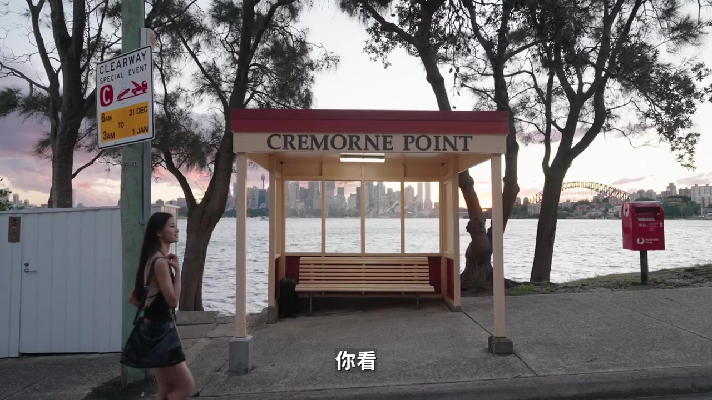
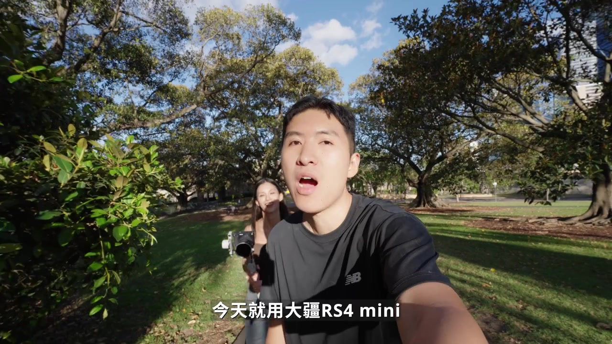
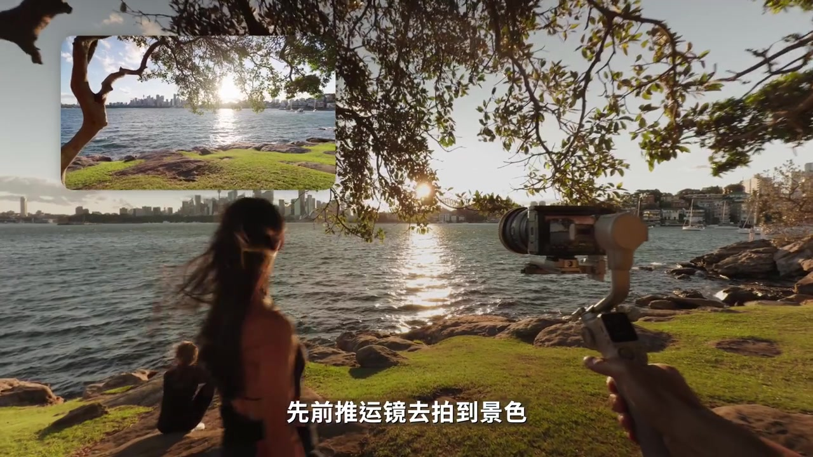
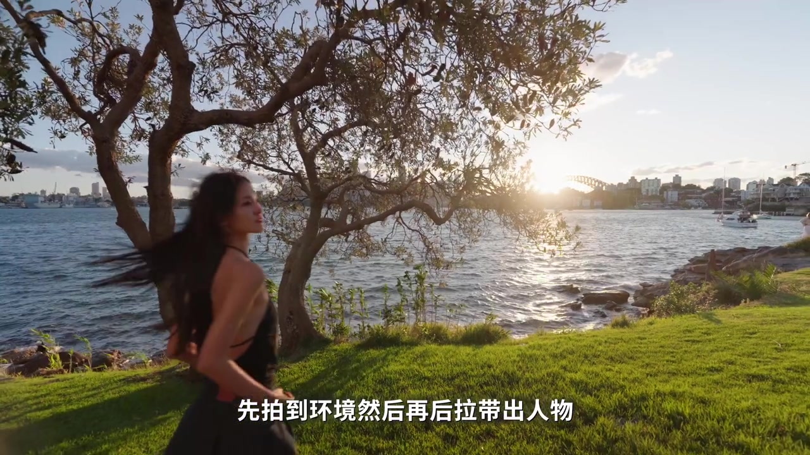
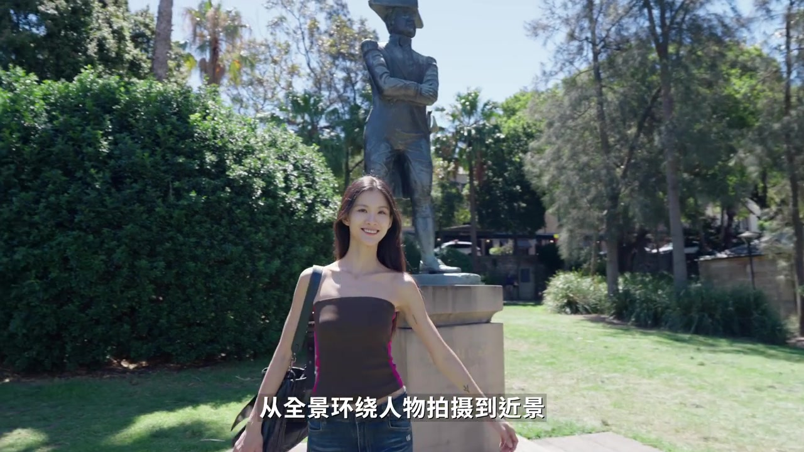
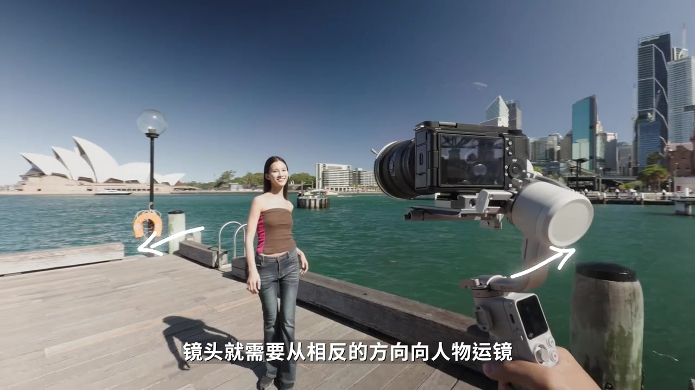
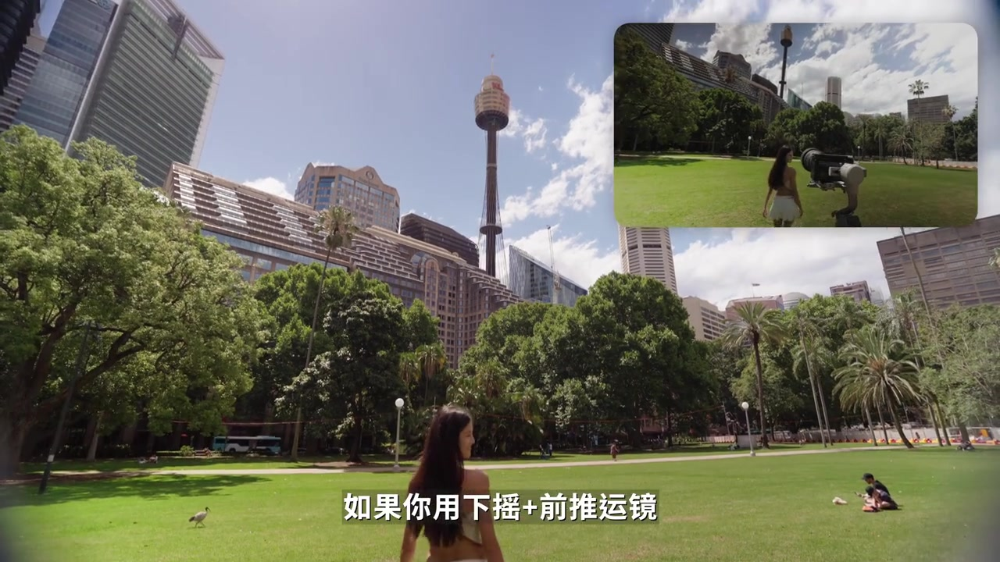
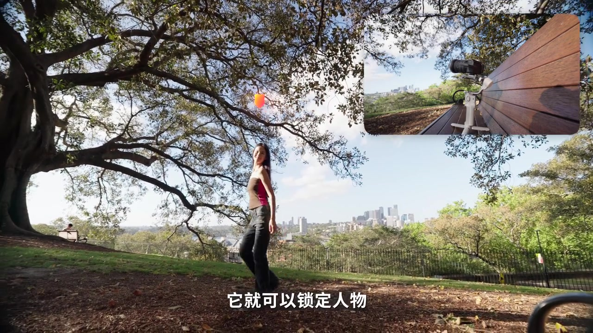

开场：好不容易出门，画面却很无聊
视频从旅行痛点切入：好不容易出门想拍点视频，脑子里第一个念头往往是把相机固定住，按下快门再左右走走。拍一会儿就会意识到——这种画面多了就没意思。

说明：笔记文案写明设备为大疆 RS4 Mini，主题是旅拍运镜小 Tips。作者昵称元数据缺失。Whisper 多处误识（见各段注与文末），叙事以可见字幕与画面为准；下方「详细文字转录」仍保留全部原始分段，不做改写。
口播语义 [00:00–00:09]：出门旅游想拍视频 → 固定相机左右走 → 画面拍多了没意思。
把相机跟着人一起动
作者立刻给对照方案：让相机跟随人物同时移动。哪怕只是最简单的运镜，画面也会丰富起来，多拍一会儿也不容易无聊。

口播 [00:10–00:23]：「现在我们把相机跟随人物同时移动」「用最简单的运镜就可以让画面丰富起来」「现在用大家的 RS4 mini 给大家分享这个运镜小 Tips」。
Whisper「运镜小 taps」对照字幕/文案 ≈「运镜小 Tips」。
别急着把人拍好看，先拍风景
第一步反直觉：明明很想把人拍好看，但可以先拍风景。作者给出两个可直接拿走的套路。
套路 A：前推运镜。 先推镜头拍景色，再让人物出场，这样拍到人的同时还能展现环境。

套路 B：后拉运镜。 镜头向后拉，先拍到环境，再后拉带出人物。

再进阶一点：一开始就加入上摇或下摇。作者说这套思路特别适合放在视频开场或结尾，非常有电影感。
口播语义 [00:23–00:46]：「我知道你很想把人拍好看，但是你可以先拍风景」「先前推运镜去拍景色，然后向人物出场」「或者把镜头向后拉……再后拉带出人物」「加入上摇或者下摇……开场或结尾，非常有电影感」。
Whisper「把人拍我看」≈「把人拍好看」。
环绕镜头，以及「格莱美式」反向运镜
第二步：出门旅游一定要记得拍一个环绕镜头。让人物靠在某个地方，从全景环绕人物拍到近景；人物注视方向可以跟摄影师一起移动，拍起来更自然。

接着她补了一招「格莱美运镜」：每年都会火、谁拍谁火——不是说你真的走红毯，而是把技巧挪到自己的视频里。秘诀是人物转身时，镜头往相反方向向人物运镜，一个画面里就能造出张力与氛围感。

口播语义 [00:46–01:14]：「出门旅游一定要记得拍一个环绕镜头」「人物注视的方向可以跟摄影师一起移动」「当人物转身的时候，镜头就需要往相反的方向向人物运镜……创造出一种张力」。
运镜别太老实：推拉摇移做小组合
下一步建议：运镜不要太老实。所有运镜都建立在推、拉、摇、移四种移动上；在这个基础上做小组合，画面会更有层次。
她最爱的是「万物皆可加摇镜头」：摇镜头本身有视觉张力；用下摇加前推，可以从天空拍到人物的样子，比单纯前推更有层次；也可以先跟随人物再加入上摇，把目光自然从人物转移到景色。

一个人自拍时，还可以把稳定器当成「可以自动摇镜头的三脚架」。
口播语义 [01:14–01:43]：「所有的运镜都是建立在推拉摇移这四种移动」「万物皆可加摇镜头」「下摇再前推……更有层次」「先跟随人物然后加入上摇」。
Whisper「推拉遥移 / 万物戒可材遥 / ECD / 维灵器 / 三条架」对照语义 ≈「推拉摇移 / 万物皆可加摇 / 层次 / 稳定器 / 三脚架」。
智能追踪：手势锁定，环绕更稳
她说手里这条 RS4 Mini 用了快一年：侧带智能追踪模块，一个人自拍时，本来只能出固定镜头，也能变成像有摄影师跟拍的摇镜头——比个手势就能锁定人物自动跟拍运镜。

环绕运镜本身不好掌控，构图容易歪；先让人物做手势锁定追踪，再环绕，就能轻松锁住目标。只要人物在十米之内，都可以保持追踪。
口播语义 [01:43–02:14]：「这一带有一个智能追踪模块」「只要跟它比个手势，它就可以锁定人物自动跟拍运镜」「让人物先做一个手势去锁定追踪，然后再去做环绕」「只要人物在十米之内，它都可以保持追踪」。
Whisper「挂掘运镜 / 构图竟然会挖偏」≈「跟拍运镜 / 构图容易会歪偏」；「拍零声一」语境不明，可能为口误或专名，转录区保留原文。
为什么她常带出门：轻、能扛、有轴锁
收尾进入个人使用体验（明确为 UP 主立场）：这一年它是她最常带出门的机器，运镜手感很轻；裸机约 890 克，承重约 2000 克，主流微单再搭配 24-70 f/2.8 基本没问题；还有自动轴锁。整体使用下来她说没有抱怨，新手旅拍运镜可以「无脑去选它」。
口播语义 [02:14–02:31]：「裸机之后 890 克，承重又是 2000 克」「主流的微单再搭配 24-70 f/2.8 都没有任何问题」「还有自动轴锁」「新手旅拍运镜可以无脑去选它」。
Whisper「运气 / 乘重 / 2470Fi的8 / 旅排 / 眷它」≈「机器 / 承重 / 24-70 f/2.8 / 旅拍 / 选它」。重量与镜头焦段为口播宣称，未做独立测量验证。
看完这条视频，你带走了什么
固定机位左右晃 → 跟随人物；先景后人（推/拉/加摇）；环绕 + 转身反向；推拉摇移组合；智能追踪辅助自拍与环绕；RS4 Mini 的轻量与承重是作者个人推荐语境。